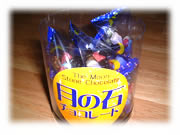
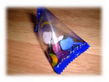
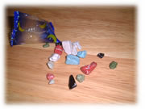

| ..*..*.. 2002年4月21日(日) 晴れ ..*..*.. 去年の11月に日本に1週間だけ帰ったとき、車で名古屋まで行きました。そのとき、浜松インターチェンジあたりで休憩して、この「月の石チョコレート」を買いました。 なんだか不思議なデザインでしょ？ ずっと部屋の中に飾ってたんだけど、最近、思い立ってあけてみました。 こんなの日本でもアメリカでも見たことありませんでした。チョコレートが、右下の写真のとおり、海岸の小石のようにコーティングされているんです。すごくリアルで、味もなかなかおいしかったので、思わず写真を撮りました。色もきれいですよね。 でも、どうしてこれが静岡で名物のように売られていたんだろう？  |